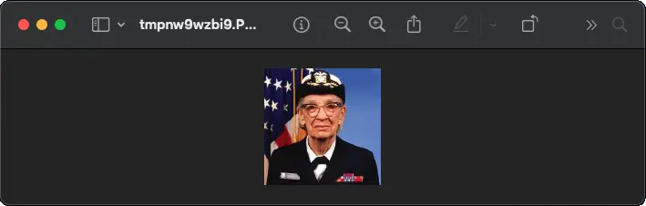
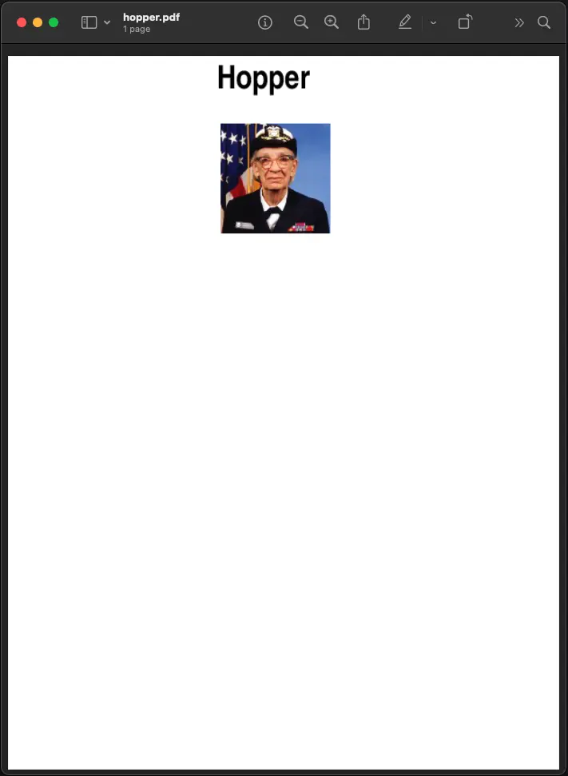

Tutorial¶
Using the Image class¶
The most important class in the Python Imaging Library is the
Image class, defined in the module with the same name.
You can create instances of this class in several ways; either by loading
images from files, processing other images, or creating images from scratch.
To load an image from a file, use the open() function
in the Image module:
>>> from PIL import Image
>>> im = Image.open("hopper.ppm")
If successful, this function returns an Image object.
You can now use instance attributes to examine the file contents:
>>> print(im.format, im.size, im.mode)
PPM (512, 512) RGB
The format attribute identifies the source of an
image. If the image was not read from a file, it is set to None. The size
attribute is a 2-tuple containing width and height (in pixels). The
mode attribute defines the number and names of the
bands in the image, and also the pixel type and depth. Common modes are “L”
(luminance) for grayscale images, “RGB” for true color images, and “CMYK” for
pre-press images.
If the file cannot be opened, an OSError exception is raised.
Once you have an instance of the Image class, you can use
the methods defined by this class to process and manipulate the image. For
example, let’s display the image we just loaded:
>>> im.show()

Note
The standard version of show() is not very
efficient, since it saves the image to a temporary file and calls a utility
to display the image. If you don’t have an appropriate utility installed,
it won’t even work. When it does work though, it is very handy for
debugging and tests.
The following sections provide an overview of the different functions provided in this library.
Reading and writing images¶
The Python Imaging Library supports a wide variety of image file formats. To
read files from disk, use the open() function in the
Image module. You don’t have to know the file format to open a
file. The library automatically determines the format based on the contents of
the file.
To save a file, use the save() method of the
Image class. When saving files, the name becomes
important. Unless you specify the format, the library uses the filename
extension to discover which file storage format to use.
Convert files to JPEG¶
import os, sys
from PIL import Image
for infile in sys.argv[1:]:
f, e = os.path.splitext(infile)
outfile = f + ".jpg"
if infile != outfile:
try:
with Image.open(infile) as im:
im.save(outfile)
except OSError:
print("cannot convert", infile)
A second argument can be supplied to the save()
method which explicitly specifies a file format. If you use a non-standard
extension, you must always specify the format this way:
Create JPEG thumbnails¶
import os, sys
from PIL import Image
size = (128, 128)
for infile in sys.argv[1:]:
outfile = os.path.splitext(infile)[0] + ".thumbnail"
if infile != outfile:
try:
with Image.open(infile) as im:
im.thumbnail(size)
im.save(outfile, "JPEG")
except OSError:
print("cannot create thumbnail for", infile)
It is important to note that the library doesn’t decode or load the raster data unless it really has to. When you open a file, the file header is read to determine the file format and extract things like mode, size, and other properties required to decode the file, but the rest of the file is not processed until later.
This means that opening an image file is a fast operation, which is independent of the file size and compression type. Here’s a simple script to quickly identify a set of image files:
Identify image files¶
import sys
from PIL import Image
for infile in sys.argv[1:]:
try:
with Image.open(infile) as im:
print(infile, im.format, f"{im.size}x{im.mode}")
except OSError:
pass
Cutting, pasting, and merging images¶
The Image class contains methods allowing you to
manipulate regions within an image. To extract a sub-rectangle from an image,
use the crop() method.
Copying a subrectangle from an image¶
box = (0, 0, 64, 64)
region = im.crop(box)
The region is defined by a 4-tuple, where coordinates are (left, upper, right, lower). The Python Imaging Library uses a coordinate system with (0, 0) in the upper left corner. Also note that coordinates refer to positions between the pixels, so the region in the above example is exactly 64x64 pixels.
The region could now be processed in a certain manner and pasted back.
Processing a subrectangle, and pasting it back¶
region = region.transpose(Image.Transpose.ROTATE_180)
im.paste(region, box)
When pasting regions back, the size of the region must match the given region exactly. In addition, the region cannot extend outside the image. However, the modes of the original image and the region do not need to match. If they don’t, the region is automatically converted before being pasted (see the section on Color transforms below for details).
Here’s an additional example:
Rolling an image¶
def roll(im: Image.Image, delta: int) -> Image.Image:
"""Roll an image sideways."""
xsize, ysize = im.size
delta = delta % xsize
if delta == 0:
return im
part1 = im.crop((0, 0, delta, ysize))
part2 = im.crop((delta, 0, xsize, ysize))
im.paste(part1, (xsize - delta, 0, xsize, ysize))
im.paste(part2, (0, 0, xsize - delta, ysize))
return im
Or if you would like to merge two images into a wider image:
Merging images¶
def merge(im1: Image.Image, im2: Image.Image) -> Image.Image:
w = im1.size[0] + im2.size[0]
h = max(im1.size[1], im2.size[1])
im = Image.new("RGBA", (w, h))
im.paste(im1)
im.paste(im2, (im1.size[0], 0))
return im
For more advanced tricks, the paste method can also take a transparency mask as an optional argument. In this mask, the value 255 indicates that the pasted image is opaque in that position (that is, the pasted image should be used as is). The value 0 means that the pasted image is completely transparent. Values in-between indicate different levels of transparency. For example, pasting an RGBA image and also using it as the mask would paste the opaque portion of the image but not its transparent background.
The Python Imaging Library also allows you to work with the individual bands of a multi-band image, such as an RGB image. The split method creates a set of new images, each containing one band from the original multi-band image. The merge function takes a mode and a tuple of images, and combines them into a new image. The following sample swaps the three bands of an RGB image:
Splitting and merging bands¶
r, g, b = im.split()
im = Image.merge("RGB", (b, g, r))
Note that for a single-band image, split() returns
the image itself. To work with individual color bands, you may want to convert
the image to “RGB” first.
Geometrical transforms¶
The PIL.Image.Image class contains methods to
resize() and rotate() an
image. The former takes a tuple giving the new size, the latter the angle in
degrees counterclockwise.
Simple geometry transforms¶
out = im.resize((128, 128))
out = im.rotate(45) # degrees counterclockwise
To rotate the image in 90 degree steps, you can either use the
rotate() method or the
transpose() method. The latter can also be used to
flip an image around its horizontal or vertical axis.
Transposing an image¶
out = im.transpose(Image.Transpose.FLIP_LEFT_RIGHT)
out = im.transpose(Image.Transpose.FLIP_TOP_BOTTOM)
out = im.transpose(Image.Transpose.ROTATE_90)
out = im.transpose(Image.Transpose.ROTATE_180)
out = im.transpose(Image.Transpose.ROTATE_270)
transpose(ROTATE) operations can also be performed identically with
rotate() operations, provided the expand flag is
true, to provide for the same changes to the image’s size.
A more general form of image transformations can be carried out via the
transform() method.
Relative resizing¶
Instead of calculating the size of the new image when resizing, you can also choose to resize relative to a given size.
from PIL import Image, ImageOps
size = (100, 150)
with Image.open("hopper.webp") as im:
ImageOps.contain(im, size).save("imageops_contain.webp")
ImageOps.cover(im, size).save("imageops_cover.webp")
ImageOps.fit(im, size).save("imageops_fit.webp")
ImageOps.pad(im, size, color="#f00").save("imageops_pad.webp")
# thumbnail() can also be used,
# but will modify the image object in place
im.thumbnail(size)
im.save("image_thumbnail.webp")
Given size |
|
|
|
|
|
Resulting image |

|
||||
Resulting size |
|
|
|
|
|
Color transforms¶
The Python Imaging Library allows you to convert images between different pixel
representations using the convert() method.
Converting between modes¶
from PIL import Image
with Image.open("hopper.ppm") as im:
im = im.convert("L")
The library supports transformations between each supported mode and the “L” and “RGB” modes. To convert between other modes, you may have to use an intermediate image (typically an “RGB” image).
Image enhancement¶
The Python Imaging Library provides a number of methods and modules that can be used to enhance images.
Filters¶
The ImageFilter module contains a number of pre-defined
enhancement filters that can be used with the
filter() method.
Applying filters¶
from PIL import ImageFilter
out = im.filter(ImageFilter.DETAIL)
Point operations¶
The point() method can be used to translate the pixel
values of an image (e.g. image contrast manipulation). In most cases, a
function object expecting one argument can be passed to this method. Each
pixel is processed according to that function:
Applying point transforms¶
# multiply each pixel by 20
out = im.point(lambda i: i * 20)
Using the above technique, you can quickly apply any simple expression to an
image. You can also combine the point() and
paste() methods to selectively modify an image:
Processing individual bands¶
# split the image into individual bands
source = im.split()
R, G, B = 0, 1, 2
# select regions where red is less than 100
mask = source[R].point(lambda i: i < 100 and 255)
# process the green band
out = source[G].point(lambda i: i * 0.7)
# paste the processed band back, but only where red was < 100
source[G].paste(out, None, mask)
# build a new multiband image
im = Image.merge(im.mode, source)
Note the syntax used to create the mask:
imout = im.point(lambda i: expression and 255)
Python only evaluates the portion of a logical expression as is necessary to determine the outcome, and returns the last value examined as the result of the expression. So if the expression above is false (0), Python does not look at the second operand, and thus returns 0. Otherwise, it returns 255.
Enhancement¶
For more advanced image enhancement, you can use the classes in the
ImageEnhance module. Once created from an image, an enhancement
object can be used to quickly try out different settings.
You can adjust contrast, brightness, color balance and sharpness in this way.
Enhancing images¶
from PIL import ImageEnhance
enh = ImageEnhance.Contrast(im)
enh.enhance(1.3).show("30% more contrast")
Image sequences¶
The Python Imaging Library contains some basic support for image sequences (also called animation formats). Supported sequence formats include FLI/FLC, GIF, and a few experimental formats. TIFF files can also contain more than one frame.
When you open a sequence file, PIL automatically loads the first frame in the sequence. You can use the seek and tell methods to move between different frames:
Reading sequences¶
from PIL import Image
with Image.open("animation.gif") as im:
im.seek(1) # skip to the second frame
try:
while 1:
im.seek(im.tell() + 1)
# do something to im
except EOFError:
pass # end of sequence
As seen in this example, you’ll get an EOFError exception when the
sequence ends.
Writing sequences¶
You can create animated GIFs with Pillow, e.g.
from PIL import Image
# List of image filenames
image_filenames = [
"hopper.jpg",
"rotated_hopper_270.jpg",
"rotated_hopper_180.jpg",
"rotated_hopper_90.jpg",
]
# Open images and create a list
images = [Image.open(filename) for filename in image_filenames]
# Save the images as an animated GIF
images[0].save(
"animated_hopper.gif",
append_images=images[1:],
duration=500, # duration of each frame in milliseconds
loop=0, # loop forever
)
The following class lets you use the for-statement to loop over the sequence:
Using the Iterator class¶
from PIL import ImageSequence
for frame in ImageSequence.Iterator(im):
# ...do something to frame...
PostScript printing¶
The Python Imaging Library includes functions to print images, text and graphics on PostScript printers. Here’s a simple example:
Drawing PostScript¶
from PIL import Image, PSDraw
import os
# Define the PostScript file
ps_file = open("hopper.ps", "wb")
# Create a PSDraw object
ps = PSDraw.PSDraw(ps_file)
# Start the document
ps.begin_document()
# Set the text to be drawn
text = "Hopper"
# Define the PostScript font
font_name = "Helvetica-Narrow-Bold"
font_size = 36
# Calculate text size (approximation as PSDraw doesn't provide direct method)
# Assuming average character width as 0.6 of the font size
text_width = len(text) * font_size * 0.6
text_height = font_size
# Set the position (top-center)
page_width, page_height = 595, 842 # A4 size in points
text_x = (page_width - text_width) // 2
text_y = page_height - text_height - 50 # Distance from the top of the page
# Load the image
image_path = "hopper.ppm" # Update this with your image path
with Image.open(image_path) as im:
# Resize the image if it's too large
im.thumbnail((page_width - 100, page_height // 2))
# Define the box where the image will be placed
img_x = (page_width - im.width) // 2
img_y = text_y + text_height - 200 # 200 points below the text
# Draw the image (75 dpi)
ps.image((img_x, img_y, img_x + im.width, img_y + im.height), im, 75)
# Draw the text
ps.setfont(font_name, font_size)
ps.text((text_x, text_y), text)
# End the document
ps.end_document()
ps_file.close()

Note
PostScript converted to PDF for display purposes
More on reading images¶
As described earlier, the open() function of the
Image module is used to open an image file. In most cases, you
simply pass it the filename as an argument. Image.open() can be used as a
context manager:
from PIL import Image
with Image.open("hopper.ppm") as im:
...
If everything goes well, the result is an PIL.Image.Image object.
Otherwise, an OSError exception is raised.
You can use a file-like object instead of the filename. The object must
implement file.read, file.seek and file.tell methods,
and be opened in binary mode.
Reading from an open file¶
from PIL import Image
with open("hopper.ppm", "rb") as fp:
im = Image.open(fp)
To read an image from binary data, use the BytesIO
class:
Reading from binary data¶
from PIL import Image
import io
im = Image.open(io.BytesIO(buffer))
Note that the library rewinds the file (using seek(0)) before reading the
image header. In addition, seek will also be used when the image data is read
(by the load method). If the image file is embedded in a larger file, such as a
tar file, you can use the ContainerIO or
TarIO modules to access it.
Reading from URL¶
from PIL import Image
from urllib.request import urlopen
url = "https://python-pillow.org/assets/images/pillow-logo.png"
img = Image.open(urlopen(url))
Reading from a tar archive¶
from PIL import Image, TarIO
fp = TarIO.TarIO("hopper.tar", "hopper.jpg")
im = Image.open(fp)
Batch processing¶
Operations can be applied to multiple image files. For example, all PNG images in the current directory can be saved as JPEGs at reduced quality.
import glob
from PIL import Image
def compress_image(source_path: str, dest_path: str) -> None:
with Image.open(source_path) as img:
if img.mode != "RGB":
img = img.convert("RGB")
img.save(dest_path, "JPEG", optimize=True, quality=80)
paths = glob.glob("*.png")
for path in paths:
compress_image(path, path[:-4] + ".jpg")
Since images can also be opened from a Path from the pathlib module,
the example could be modified to use pathlib instead of the glob
module.
from pathlib import Path
paths = Path(".").glob("*.png")
for path in paths:
compress_image(path, path.stem + ".jpg")
Controlling the decoder¶
Some decoders allow you to manipulate the image while reading it from a file. This can often be used to speed up decoding when creating thumbnails (when speed is usually more important than quality) and printing to a monochrome laser printer (when only a grayscale version of the image is needed).
The draft() method manipulates an opened but not yet
loaded image so it as closely as possible matches the given mode and size. This
is done by reconfiguring the image decoder.
Reading in draft mode¶
This is only available for JPEG and MPO files.
from PIL import Image
with Image.open(file) as im:
print("original =", im.mode, im.size)
im.draft("L", (100, 100))
print("draft =", im.mode, im.size)
This prints something like:
original = RGB (512, 512)
draft = L (128, 128)
Note that the resulting image may not exactly match the requested mode and size. To make sure that the image is not larger than the given size, use the thumbnail method instead.